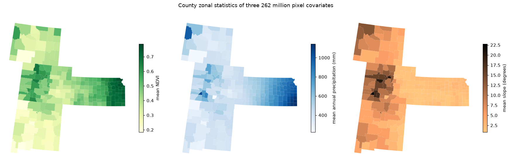
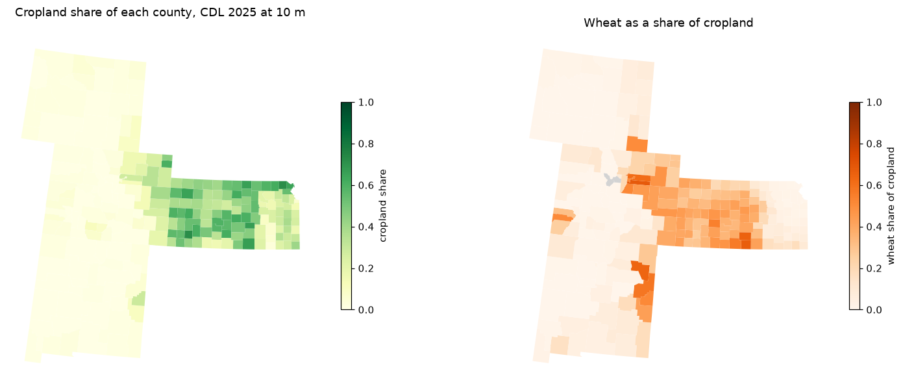
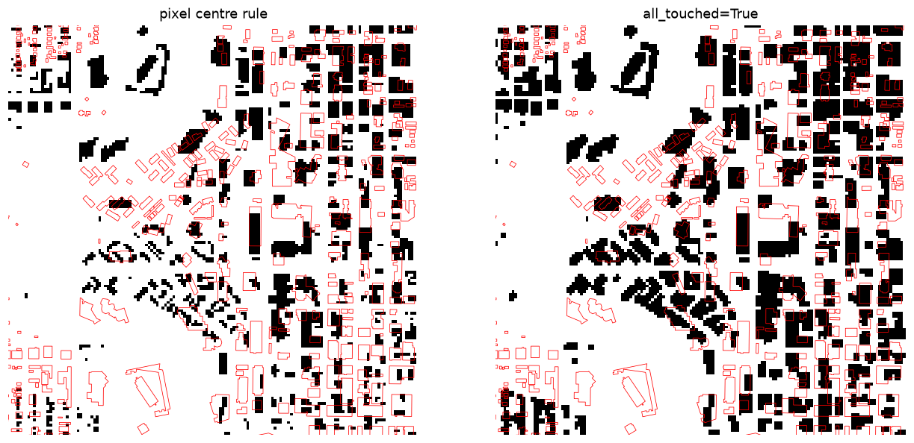
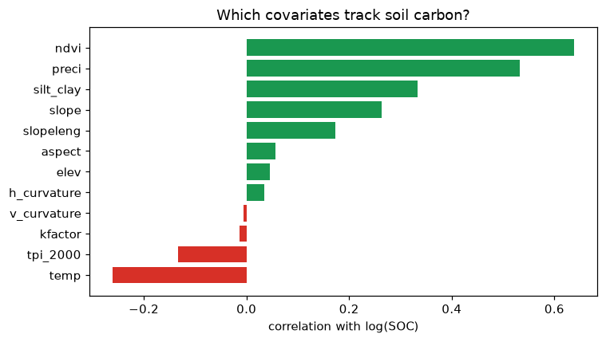
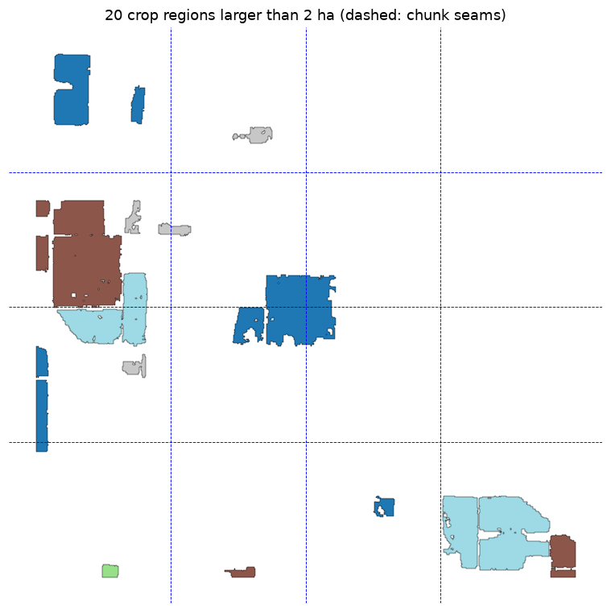

Rasterize, Zonal Statistics, Point Extraction and Polygonize at Scale
Most spatial analyses move between the two models of space: county averages of a climate raster, covariate values at soil sampling points, a land cover map turned into field polygons, building footprints burned onto a grid. With small data each of these is one function call. With a 21 billion pixel crop map and hundreds of zones, the raster no longer fits in memory and the work has to be split into chunks that still give exact answers for zones and features that cross chunk edges. This notebook uses geolattice.distributed.bridge for all four directions: zonal statistics of the Great Plains covariates and of the 10 m Cropland Data Layer by county, rasterizing counties and buildings, extracting all covariates at the 570 soil carbon points, and polygonizing crop fields.
Overview
Four bridges between vectors and rasters
Direction
Operation
Question it answers
vector to raster
rasterize
which zone (or how much of a feature) is in each pixel?
raster to vector, by zone
zonal statistics
what is the mean, sum or range of a raster inside each polygon?
raster to vector, by point
point extraction
what are the raster values at these locations?
raster to vector, by region
polygonize
which connected regions of equal value does the raster contain?
How each one is split into chunks
Rasterize: each raster chunk needs only the features whose bounding boxes touch it (a spatial index query per chunk); chunks are burned independently.
Zonal statistics is a reduction. Each chunk computes per-zone partial results (count, sum, sum of squares, minimum, maximum) for the zones it contains; adding the partials gives exact totals, means and standard deviations, however many chunks a zone spans.
Point extraction reads only the chunks that hold points, and for bilinear interpolation the four neighbouring pixels (which may lie in a neighbouring chunk).
Polygonize traces each chunk separately; regions cut by chunk seams are then merged with their same-valued neighbours across the seam.
Pixel-centre rule
A pixel belongs to a polygon when its centre falls inside it (GDAL’s default). Small or thin polygons can therefore get no pixels at all; all_touched=True instead takes every pixel the polygon touches, which overcounts along edges. For zonal statistics over counties (thousands of pixels each) the choice hardly matters; for building footprints on a 10 m grid it matters a lot.
Raster and Vector Bridges with GeoLattice
Function
Inputs
Output
GPU
pdist.rasterize(gdf, like, column=, all_touched=)
features and a template raster
(y, x) DataArray on the template grid
polygons, opt-in (compute="gpu")
pdist.zonal_stats(zones, raster, stats=)
polygons and a (y, x) or (band, y, x) raster
the zones with one column per statistic and band
partial statistics with CuPy
pdist.extract_values(points, raster, method=)
points and a raster
the points with one column per band
gathers on the GPU
pdist.polygonize(raster, connectivity=)
a (y, x) raster
GeoDataFrame of regions
CPU only
All four accept lazy rasters and work chunk by chunk. pdist.explain("bridge.rasterize") shows that compute="auto" keeps rasterize on the CPU: GDAL’s scanline fill was faster than the GPU kernel on typical inputs.
Learning objectives
Name the four bridges between vector and raster data and how each is split into chunks.
Compute zonal statistics of several large rasters by county, on CPU and GPU, and check them against a direct calculation.
Summarize 21 billion 10 m CDL pixels by county without loading the raster.
Rasterize counties and buildings, and see the effect of the pixel-centre rule.
Extract 12 covariates at 570 sampling points, with nearest and bilinear interpolation.
Polygonize a crop map chunk by chunk and confirm the seam merging.
Data
Dataset
Content
Great Plains covariates
90 m rasters, 17,196 x 15,245, EPSG:5070
Great Plains counties
225 polygons in Colorado, Kansas, New Mexico and Wyoming
Great Plains soil organic carbon
570 sampling points with SOC (kg m-2)
2025 CDL, 10 m
the Great Plains rectangle: 154,776 x 137,219 pixels (21 billion)
Kansas buildings
1.6 million footprints (notebook 00)
Contents
Setup
Zonal statistics of three covariates by county
Cropland of every county from 21 billion pixels
Rasterizing counties and buildings
Covariates at the soil carbon points
Polygonizing crop fields
Summary and exercises
Setup
Code
import warnings # warning controlwarnings.filterwarnings("ignore") # hide routine library warningsimport os # environment and CPU countimport time # wall-clock timingfrom pathlib import Path # file pathsimport matplotlib.pyplot as plt # figuresimport numpy as np # arraysimport pandas as pd # tablesimport geopandas as gpd # vector dataimport xarray as xr # labelled rastersimport geolattice # GeoLatticeimport geolattice.distributed as pdist # distributed and GPU spatial computingimport dist_data as dd # chapter helper: paths, cached downloads, timersplt.rcParams.update({"figure.dpi": 110}) # figure resolutionpd.set_option("display.width", 140) # wider printed tablesOUT = Path("outputs") # results and scratch files written by this chapterOUT.mkdir(exist_ok=True) # create it if neededcaps = pdist.capabilities() # engines and GPUs on this machineprint("GeoLattice", geolattice.__version__, "|", os.cpu_count(), "CPU cores |", caps["gpus"], "GPU(s)", # versionsf"({caps.get('gpu_memory_total', 0) /1e9:.0f} GB)"if caps["gpus"] else"") # GPU memoryimport dask # Dask configurationdef sync(): # wait for queued GPU work so timings are realif caps["gpus"]: # only with a GPUimport cupy as cp # GPU arrays cp.cuda.Device().synchronize() # block until donecounties = dd.gp_counties() # 225 county polygons, EPSG:5070print(len(counties), "counties in", sorted(counties.state.unique())) # zones
GeoLattice 0.3.49 | 24 CPU cores | 1 GPU(s) (17 GB)
225 counties in ['CO', 'KS', 'NM', 'WY']
Zonal statistics of three covariates by county
NDVI, mean annual precipitation and slope are stacked into one lazy (band, y, x) raster, and pdist.zonal_stats returns the count, mean, minimum, maximum and standard deviation of each band in every county.
Code
stack = dd.gp_stack(["ndvi", "preci", "slope"]) # lazy (3, y, x), 2048 x 2048 chunksprint(dict(stack.sizes), stack.data.npartitions, "chunks |", dd.gb(stack.nbytes)) # sizeres = {} # timingsfor c in (["cpu", "gpu"] if caps["gpus"] else ["cpu"]): # both targets t0 = time.perf_counter() # start zs = pdist.zonal_stats(counties, stack, stats=["count", "mean", "min", "max", "std"], compute=c) # one pass over the stack res[c] = time.perf_counter() - t0; out = zs if c =="cpu"else out # keep the CPU tableprint(f"compute={c}: {res[c]:.1f} s") # timeif caps["gpus"]: # compare the two cols = [k for k in zs.columns if k.startswith(("mean", "std"))] # numeric columnsprint("largest |GPU - CPU| difference in means and standard deviations:", float(np.nanmax(np.abs(zs[cols].values - out[cols].values)))) # agreementout[["county", "state", "count_ndvi", "mean_ndvi", "mean_preci", "mean_slope", "max_slope"]].head() # first rows
{'band': 3, 'y': 17196, 'x': 15245} 216 chunks | 3.15 GB
compute=cpu: 6.4 s
compute=gpu: 3.8 s
largest |GPU - CPU| difference in means and standard deviations: 7.058455153696741e-09
county
state
count_ndvi
mean_ndvi
mean_preci
mean_slope
max_slope
0
Los Alamos County
NM
32356
0.434753
526.603356
12.367376
59.610966
1
Pratt County
KS
222190
0.527103
693.357611
1.181373
7.868164
2
Decatur County
KS
274949
0.483210
554.580079
2.121339
13.056653
3
Cibola County
NM
1416265
0.279988
357.581973
4.518769
55.192734
4
Kiowa County
KS
222019
0.520429
645.634455
1.495461
15.402102
Both targets read the same 3.1 GB stack; the GPU version was somewhat faster because the partial sums per chunk (a bincount over millions of pixels for every band) run on the device, while reading the GeoTIFFs costs the same on both. As a check, the mean NDVI of three counties is recomputed directly: clip the raster to each county with rioxarray and average the pixels whose centres fall inside.
Code
ndvi = dd.gp_raster("ndvi") # lazy NDVIfor i in [0, 1, 100]: # three counties cty = counties.iloc[[i]] # one county direct =float(ndvi.rio.clip(cty.geometry, all_touched=False).mean()) # pixels inside, directlyprint(f"{cty.county.iloc[0]:22s} zonal_stats {out.mean_ndvi.iloc[i]:.5f} direct {direct:.5f}") # compare
Los Alamos County zonal_stats 0.43475 direct 0.43475
Pratt County zonal_stats 0.52710 direct 0.52710
Sierra County zonal_stats 0.24060 direct 0.24060
Code
fig, ax = plt.subplots(1, 3, figsize=(16, 5.2)) # three mapsfor a, (col, cmap, label) inzip(ax, [("mean_ndvi", "YlGn", "mean NDVI"), ("mean_preci", "Blues", "mean annual precipitation (mm)"), # columns ("mean_slope", "copper_r", "mean slope (degrees)")]): # third out.plot(col, ax=a, cmap=cmap, legend=True, legend_kwds={"shrink": 0.6, "label": label}) # choropleth a.set_axis_off() # no axesplt.suptitle("County zonal statistics of three 262 million pixel covariates"); plt.tight_layout(); plt.show() # draw

The direct check agrees to rounding. The maps show the east-to-west gradient of the Great Plains: wetter, greener and flatter in eastern Kansas, drier and steeper towards the Rockies.
Cropland of every county from 21 billion pixels
The same function works on the 10 m CDL. A lazy three-band raster flags, for every pixel, all cropland, wheat and corn (1 or 0, NaN where there is no data); the sum statistic of each band is then a pixel count per county, and 100 m2 per pixel turns it into area. Nothing larger than a few chunks per thread is ever in memory, which makes the chunk size the memory control: each task holds the uint8 codes, three float32 flag bands and the zone labels of one chunk, about a gigabyte for 4096 x 4096 pixels. With 8192 pixel chunks the same job needed four times that per task, and with 24 threads it exhausted this machine’s 123 GB of memory while the notebook was written.
Code
gp = counties.total_bounds # extent of the countiescdl = dd.cdl(chunks={"y": 4096, "x": 4096}).sel(x=slice(gp[0], gp[2]), y=slice(gp[3], gp[1])) # lazy 10 m window, 4096 pixel chunksprint(f"{cdl.shape[0]:,} x {cdl.shape[1]:,} = {cdl.size /1e9:.1f} billion pixels, {cdl.data.npartitions} chunks") # sizeluts = {} # one lookup table per bandfor band, groups in [("crop", dd.CROP_GROUPS), ("wheat", ["Wheat"]), ("corn", ["Corn"])]: # three flags lut = np.zeros(256, np.float32) # 0 for everything elsefor g in groups: # the groups in this band lut[dd.CDL_GROUPS[g]] =1.0# 1 for their codes lut[0] = np.nan # no data luts[band] = lut # keep itflags = xr.concat([pdist.raster.map_tiles(cdl, lambda b, xp, l=l: xp.asarray(l)[b], dtype="float32", compute="cpu") # one band per flagfor l in luts.values()], dim="band").assign_coords(band=list(luts)) # (3, y, x)with dd.PeakMemory() as pm: # watch memory t0 = time.perf_counter() # start crops = pdist.zonal_stats(counties, flags, stats=["count", "sum"], compute="cpu") # one pass over 21 billion pixels secs = time.perf_counter() - t0 # elapsedprint(f"{secs /60:.1f} minutes; peak process memory {pm.peak_gb:.1f} GB") # costfor band in luts: # areas crops[f"{band}_km2"] = crops[f"sum_{band}"] *100/1e6# pixels to km2crops["crop_share"] = crops.crop_km2 / (crops.count_crop *100/1e6) # share of mapped landprint(f"cropland in the 225 counties: {crops.crop_km2.sum():,.0f} km2, of which wheat {crops.wheat_km2.sum():,.0f} and corn {crops.corn_km2.sum():,.0f}") # totalscrops.nlargest(5, "crop_km2")[["county", "state", "crop_km2", "wheat_km2", "corn_km2", "crop_share"]].round(2) # top counties
154,776 x 137,219 = 21.2 billion pixels, 1330 chunks
6.3 minutes; peak process memory 27.1 GB
cropland in the 225 counties: 117,687 km2, of which wheat 33,105 and corn 33,861
county
state
crop_km2
wheat_km2
corn_km2
crop_share
202
Washington County
CO
2227.32
1056.75
502.33
0.34
208
Kit Carson County
CO
2195.58
877.09
952.88
0.39
50
Sumner County
KS
2040.11
863.18
325.38
0.66
32
Thomas County
KS
1822.66
476.18
1114.27
0.66
216
Finney County
KS
1805.24
531.39
589.46
0.54
Code
fig, ax = plt.subplots(1, 2, figsize=(15, 5.5)) # two mapscrops.plot("crop_share", ax=ax[0], cmap="YlGn", vmin=0, vmax=1, legend=True, legend_kwds={"shrink": 0.6, "label": "cropland share"}) # crop sharecrops.assign(wheat_share=crops.wheat_km2 / crops.crop_km2.where(crops.crop_km2 >0)).plot( # wheat as a share of cropland"wheat_share", ax=ax[1], cmap="Oranges", vmin=0, vmax=1, legend=True, legend_kwds={"shrink": 0.6, "label": "wheat share of cropland"}, missing_kwds={"color": "lightgrey"}) # counties without croplandfor a in ax: # both maps a.set_axis_off() # no axesax[0].set_title("Cropland share of each county, CDL 2025 at 10 m"); ax[1].set_title("Wheat as a share of cropland") # titlesplt.tight_layout(); plt.show() # draw

Kansas counties are 40 to 80 % cropland, and wheat makes up the largest share of it in central Kansas and on the plains of eastern Colorado; the mountain and rangeland counties of Colorado, Wyoming and New Mexico have little cropland at all. The job decompressed and counted 21 billion pixels in about six minutes, and the process memory stayed below 30 GB, a small fraction of the 254 GB the three flag bands would occupy in memory.
Rasterizing counties and buildings
pdist.rasterize burns features onto the grid of a template raster. Counties onto the 90 m grid give a zone raster (one number per county). Here the opt-in GPU kernel is timed against the default GDAL scanline fill.
Code
like = dd.gp_raster("elev") # template grid, lazyprint(pdist.explain("bridge.rasterize")["reason"]) # why auto stays on the CPUr = {} # timingsfor c in (["cpu", "gpu"] if caps["gpus"] else ["cpu"]): # both targets t0 = time.perf_counter(); zone = pdist.rasterize(counties, like, values=np.arange(1, len(counties) +1), dtype="int32", compute=c).compute(); sync() # burn r[c] = time.perf_counter() - t0 # elapsedprint(f"compute={c}: {r[c]:.2f} s, {int((zone >0).sum()):,} pixels inside a county") # result
GPU version is opt-in (slower on typical inputs); pass compute='gpu'
compute=cpu: 0.60 s, 129,746,588 pixels inside a county
compute=gpu: 0.63 s, 129,746,588 pixels inside a county
On this grid GDAL’s scanline fill and the GPU kernel are close. GDAL fills each polygon row by row, visiting only pixels inside it; the GPU kernel tests every pixel of a chunk against every candidate polygon, which pays off only for many small polygons on fine grids.
Buildings are the opposite case: small polygons on a fine grid. Burned onto a 10 m grid of central Wichita, the pixel-centre rule and all_touched give very different building areas.
Code
bld = dd.kansas_buildings() # buildings, EPSG:4326box = gpd.GeoSeries.from_xy([-97.34], [37.69], crs=4326).to_crs(5070).iloc[0] # central Wichitax0, y0 = box.x -2500, box.y -2500# 5 x 5 km windowtmpl = xr.DataArray(np.zeros((500, 500), np.float32), dims=("y", "x"), # a 10 m template grid coords={"y": y0 +5000-5-10* np.arange(500), "x": x0 +5+10* np.arange(500)}).rio.write_crs(5070) # pixel centreswin = pdist.vector.to_crs(bld, 5070).cx[x0:x0 +5000, y0:y0 +5000] # buildings in the windowtrue_area =float(pdist.vector.clip(win, (x0, y0, x0 +5000, y0 +5000)).area.sum()) # footprint area insidecentre = pdist.rasterize(win, tmpl, dtype="uint8") # pixel-centre ruletouched = pdist.rasterize(win, tmpl, all_touched=True, dtype="uint8") # every touched pixelprint(f"{len(win):,} buildings; footprint area {true_area /1e6:.2f} km2;", # truthf"pixel centre {float(centre.sum()) *100/1e6:.2f} km2; all touched {float(touched.sum()) *100/1e6:.2f} km2") # estimatesfig, ax = plt.subplots(1, 2, figsize=(12, 5.5)) # two panelsfor a, arr, t in [(ax[0], centre, "pixel centre rule"), (ax[1], touched, "all_touched=True")]: # both rules a.imshow(arr[150:300, 150:300], cmap="Greys", interpolation="nearest", extent=[x0 +1500, x0 +3000, y0 +3500, y0 +2000]) # 1.5 km zoom win.cx[x0 +1500:x0 +3000, y0 +2000:y0 +3500].boundary.plot(ax=a, color="r", lw=0.5) # outlines a.set_xlim(x0 +1500, x0 +3000); a.set_ylim(y0 +2000, y0 +3500); a.set_title(t); a.set_axis_off() # zoomplt.tight_layout(); plt.show() # draw
13,645 buildings; footprint area 3.65 km2; pixel centre 3.67 km2; all touched 8.11 km2

In total the pixel-centre rule came remarkably close to the true footprint area, while all_touched more than doubled it. The total hides the errors of individual buildings: the zoom shows small houses that got no pixel at all, and others that got a whole 10 x 10 m pixel for a corner. The errors cancel over thousands of buildings but not for any single one. For building or road coverage per pixel, compute the area fraction instead (for example by rasterizing onto a grid ten times finer and coarsening), and never use all_touched for areas.
Covariates at the soil carbon points
Regression kriging and machine learning (chapter 05 and notebook 09) start from a table of the response and the covariates at each sampling point. pdist.extract_values reads, for 570 points, only the chunks that contain them.
Code
soc = dd.gp_points() # 570 points with SOCcov = dd.gp_stack() # the 12 continuous covariates, lazy (12, y, x)with dd.timer("nearest-pixel extraction of 12 covariates at 570 points"): # read only needed chunks near = pdist.extract_values(soc, cov, method="nearest", name="v") # one column per bandwith dd.timer("bilinear extraction"): # four pixels per point lin = pdist.extract_values(soc, cov, method="linear", name="v") # interpolatedcols = [f"v_{b}"for b in dd.PREDICTORS] # the new columnstable = near[["SiteID", "SOC"] + cols].rename(columns=lambda c: c[2:] if c.startswith("v_") else c) # tidy names (strip the "v_" prefix only)print(f"points with any missing covariate: {int(table[dd.PREDICTORS].isna().any(axis=1).sum())}") # completenessdiff = (lin[cols] - near[cols]).abs().median().rename(lambda c: c[2:]) # typical change from nearest to bilinearprint("median |bilinear - nearest|:", diff.round(3).to_dict()) # by covariatetable.to_csv(OUT /"gp_soc_covariates.csv", index=False) # saved for later notebookstable.head() # first rows
nearest-pixel extraction of 12 covariates at 570 points: 6.22 s
bilinear extraction: 24.81 s
points with any missing covariate: 9
median |bilinear - nearest|: {'elev': 0.648, 'slope': 0.263, 'aspect': 11.214, 'h_curvature': 0.009, 'v_curvature': 0.009, 'tpi_2000': 0.665, 'slopeleng': 0.211, 'ndvi': 0.001, 'preci': 0.0, 'temp': 0.0, 'silt_clay': 0.0, 'kfactor': 0.0}
SiteID
SOC
elev
slope
aspect
h_curvature
v_curvature
tpi_2000
slopeleng
ndvi
preci
temp
silt_clay
kfactor
0
1
2.304
1544.0
0.790807
333.434937
0.014347
0.026692
1.153564
0.000000
0.282992
384.309204
9.775001
61.599998
0.32
1
2
3.154
2308.0
0.353674
0.000000
-0.000000
0.012345
-1.135742
0.147901
0.429635
195.019608
5.340000
34.799999
0.15
2
3
1.309
1715.0
1.767934
306.869904
0.035834
0.023493
3.805542
0.000000
0.399010
472.759064
9.979999
66.400002
0.37
3
4
4.717
1839.0
3.257900
12.528808
0.053657
-0.016244
12.818115
0.000000
0.382085
459.779114
9.384998
66.400002
0.37
4
5
2.230
1766.0
0.353674
90.000000
0.022987
-0.014048
10.004639
0.000000
0.311019
437.049103
9.509999
42.400002
0.20
Code
r = table[dd.PREDICTORS].corrwith(np.log(table.SOC)).sort_values() # correlation with log SOCfig, ax = plt.subplots(figsize=(7, 4)) # one panelax.barh(r.index, r.values, color=np.where(r >0, "#1a9850", "#d73027")) # barsax.set_xlabel("correlation with log(SOC)"); ax.set_title("Which covariates track soil carbon?") # labelsplt.tight_layout(); plt.show() # draw

Extraction took several seconds, and bilinear interpolation about four times as long, since it gathers the four surrounding pixels in four passes. The 570 points are spread over the whole region, so they touch most of the 2048 x 2048 chunks of all 12 layers, and every touched chunk is read whole; extraction is fast for clustered points and for small chunks, and costs a full read of the stack for points scattered everywhere. Soil organic carbon rises with NDVI and precipitation and falls with temperature, the familiar climate and vegetation controls; notebook 09 turns this table into a model and a map.
Polygonizing crop fields
pdist.polygonize traces regions of equal value chunk by chunk and merges regions cut by chunk seams. Polygonizing a 6 x 6 km CDL window south of Wichita with one chunk and with 16 chunks of 150 x 150 pixels should give the same polygons.
Code
c = dd.cdl().sel(x=slice(box.x -3000, box.x +3000), y=slice(box.y -9000, box.y -15000)).compute() # 600 x 600 pixels, 10 mc = c.where(c >0) # no data as NaNt0 = time.perf_counter(); one = pdist.polygonize(c, chunks=(600, 600)); t1 = time.perf_counter() - t0 # one chunkt0 = time.perf_counter(); many = pdist.polygonize(c, chunks=(150, 150)); t16 = time.perf_counter() - t0 # 16 chunks with seamsprint(f"one chunk: {len(one)} polygons ({t1:.2f} s) | 16 chunks: {len(many)} polygons ({t16:.2f} s)") # countsprint(f"total area {one.area.sum() /1e6:.3f} vs {many.area.sum() /1e6:.3f} km2;", # areas"same region areas:", bool(np.allclose(np.sort(one.area.values), np.sort(many.area.values)))) # identical regions
one chunk: 5281 polygons (0.12 s) | 16 chunks: 5281 polygons (0.28 s)
total area 36.000 vs 36.000 km2; same region areas: True
Code
fields = many[many.value.isin(sum((dd.CDL_GROUPS[g] for g in dd.CROP_GROUPS), []))] # crop regions onlyfields = fields[fields.area >2e4] # larger than 2 hafig, ax = plt.subplots(figsize=(7, 7)) # one mapfields.plot(ax=ax, column="value", categorical=True, cmap="tab20", edgecolor="k", linewidth=0.3, legend=False) # fields by crop codefor x in np.arange(1, 4) *1500: # chunk seams ax.axvline(box.x -3000+ x, color="b", lw=0.6, ls="--"); ax.axhline(box.y -15000+ x, color="b", lw=0.6, ls="--") # dashed linesax.set_title(f"{len(fields)} crop regions larger than 2 ha (dashed: chunk seams)"); ax.set_axis_off(); plt.tight_layout(); plt.show() # draw

The 16-chunk result contains the same regions as the single-chunk result: fields cut by the dashed seams were stitched back together. CDL regions are not field boundaries in a cadastral sense (neighbouring fields with the same crop merge, and classification noise creates small fragments), but they are a useful first approximation, and the chunked algorithm makes it possible to polygonize a whole state.
Summary and exercises
Rasterize, zonal statistics, point extraction and polygonize each split cleanly into chunks: per-chunk feature queries, per-chunk partial statistics, per-chunk gathers, and per-chunk tracing with seam merging.
County statistics of three 262 million pixel covariates agreed with a direct clip-and-average, and the GPU matched the CPU.
Counting cropland, wheat and corn in 225 counties from 21 billion 10 m pixels took about six minutes with less than 30 GB of memory; the chunk size controls that memory.
The pixel-centre rule matched the total building area, though not single buildings; all_touched doubled it. For coverage fractions, rasterize finer and aggregate.
Twelve covariates were extracted at 570 scattered points in seconds, and polygonizing with 16 chunks gave the same regions as one chunk.
Exercises
Add "std" to the CDL zonal statistics. What does the standard deviation of a 0 or 1 flag mean?
Rasterize the Wichita buildings onto a 1 m grid and coarsen to 10 m to get a building fraction per pixel; compare its total with the true footprint area.
Extract the covariates with method="linear" and fit a linear model of log SOC on them. Does bilinear extraction improve the fit compared with nearest?
Polygonize the whole of Sedgwick County from the CDL with 2048 pixel chunks and count the corn and soybean fields.